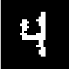

Markov chain Monte Carlo
Machine Learning Summer School 2009
http://mlg.eng.cam.ac.uk/mlss09/
Iain Murray
http://www.cs.toronto.edu/~murray/
A statistical problem
What is the average height of the MLSS lecturers?
Method: measure their heights, add them up and divide by N = 20.
What is the average height f of people p in Cambridge C?
1
E
X
p∈C[f (p)] ≡
f(p),
|C|
“intractable”?
p∈C
1 S
‚âà X f p(s)�,
S
for random survey of S people {p(s)} ∈ C
s=1
Surveying works for large and notionally infinite populations.
Simple Monte Carlo
Statistical sampling can be applied to any expectation:
In general:
S
Z
1
f(x)P (x) dx ≈
Xf(x(s)), x(s) ∼ P (x)
S s=1
Example: making predictions
Z
p(x|D) =
P (x|θ, D)P (θ|D) dθ
1 S
≈
XP (x|θ(s), D), θ(s) ∼ P (θ|D)
S s=1
More examples: E-step statistics in EM, Boltzmann machine learning
Properties of Monte Carlo
S
Z
1 X
Estimator:
f(x)P (x) dx ≈ ˆ
f ≡
f(x(s)), x(s) ∼ P (x)
S s=1
Estimator is unbiased:
S
h ˆ
1 X
E
fi =
P ({x(s)})
S
EP (x) [f (x)] = EP (x) [f (x)]
s=1
Variance shrinks ∝ 1/S:
1 S
var
h ˆ
fi =
X var
P ({x(s)})
S2
P (x) [f (x)]
= varP(x)[f(x)] /S
s=1
√
“Error bars” shrink like
S
A dumb approximation of π
(1 0<x<1 and 0<y <1
P (x, y) = 0 otherwise
Z Z
π = 4
I (x2 + y2) < 1�P (x, y) dx dy
octave:1> S=12; a=rand(S,2); 4*mean(sum(a.*a,2)<1)
ans = 3.3333
octave:2> S=1e7; a=rand(S,2); 4*mean(sum(a.*a,2)<1)
ans = 3.1418
Aside: don’t always sample!
“Monte Carlo is an extremely bad method; it should be used only
when all alternative methods are worse.”
— Alan Sokal, 1996
Example: numerical solutions to (nice) 1D integrals are fast
octave:1> 4 * quadl(@(x) sqrt(1-x.^2), 0, 1, tolerance)
Gives π to 6 dp’s in 108 evaluations, machine precision in 2598.
(NB Matlab’s quadl fails at zero tolerance)
Other lecturers are covering alternatives for higher dimensions.
No approx. integration method always works. Sometimes Monte Carlo is the best.

Eye-balling samples
Sometimes samples are pleasing to look at:
(if you’re into geometrical combinatorics)
Figure by Propp and Wilson. Source: MacKay textbook.
Sanity check probabilistic modelling assumptions:
Data samples
MoB samples
RBM samples
Monte Carlo and Insomnia
Enrico Fermi (1901–1954) took great
delight in astonishing his colleagues
with his remakably accurate predictions
of experimental results. . . he revealed
that his “guesses” were really derived
from the statistical sampling techniques
that he used to calculate with whenever
insomnia struck in the wee morning
hours!
—The beginning of the Monte Carlo method,
N. Metropolis
Sampling from a Bayes net
Ancestral pass for directed graphical models:
— sample each top level variable from its marginal
— sample each other node from its conditional
once its parents have been sampled
A
B
Sample:
A ∼ P (A)
B ∼ P (B)
C
C ∼ P (C |A, B)
D
D ∼ P (D |B, C)
E
E ∼ P (D |C, D)
P (A, B, C, D, E) = P (A) P (B) P (C |A, B) P (D |B, C) P (E |C, D)
Sampling the conditionals
Use library routines for
univariate distributions
(and some other special cases)
This book (free online) explains how
some of them work
http://cg.scs.carleton.ca/~luc/rnbookindex.html
Sampling from distributions
Draw points uniformly under the curve:
P (x)
x
x(2)
x(3)
x(1) x(4)
Probability mass to left of point ∼ Uniform[0,1]
Sampling from distributions
How to convert samples from a Uniform[0,1] generator:
1
h(y)
h(y) = R y p(y0) dy0
−∞
p(y)
Draw mass to left of point:
u ∼ Uniform[0,1]
Sample, y(u) = h−1(u)
0
y
Figure from PRML, Bishop (2006)
Although we can’t always compute and invert h(y)
Rejection sampling
Sampling underneath a ˜
P (x)∝P (x) curve is also valid
Draw underneath a simple
curve k ˜
Q(x) ≥ ˜
P (x):
k ˜
Q(x)
k ˜
optQ(x)
– Draw x ∼ Q(x)
– height u ∼ Uniform[0, k ˜
Q(x)]
˜
P (x)
(xi, ui)
Discard the point if above ˜
P ,
i.e. if u > ˜
P (x)
(xj, uj)
x
x(1)
Importance sampling
Computing ˜
P (x) and ˜
Q(x), then throwing x away seems wasteful
Instead rewrite the integral as an expectation under Q:
Z
Z
P (x)
f(x)P (x) dx =
f(x)
Q(x) dx,
Q(x)
(Q(x) > 0 if P (x) > 0)
1 S
P (x(s))
≈
Xf(x(s))
, x(s) ∼ Q(x)
S
Q(x(s))
s=1
This is just simple Monte Carlo again, so it is unbiased.
Importance sampling applies when the integral is not an expectation.
Divide and multiply any integrand by a convenient distribution.
Importance sampling (2)
Previous slide assumed we could evaluate P (x) = ˜
P (x)/ZP
S
Z
Z 1
˜
P (x(s))
f(x)P (x) dx ≈
Q
X f(x(s))
, x(s) ∼ Q(x)
Z
˜
P S
Q(x(s))
s=1
|
{z
}
˜r(s)
S
˜r(s)
S
‚âà ��1 X
X
�
f(x(s))
≡
f(x(s))w(s)
�
1 P
�
S
�
�
�
s=1
�
S
s0 ˜
r(s0)
s=1
�
This estimator is consistent but biased
Exercise: Prove that Z
P
P /ZQ ≈ 1
˜r(s)
S
s
Summary so far
• Sums and integrals, often expectations, occur frequently in statistics
• Monte Carlo approximates expectations with a sample average
• Rejection sampling draws samples from complex distributions
• Importance sampling applies Monte Carlo to ‘any’ sum/integral
Application to large problems
We often can’t decompose P (X) into low-dimensional conditionals
Undirected graphical models: P (x) = 1 Q f
Z
i
i(x)
A
B
Posterior of a directed graphical model
C
P (A, B, C, D, E)
P (A, B, C, D |E) =
D
P (E)
E
We often don’t know Z or P (E)
Application to large problems
Rejection & importance sampling scale badly with dimensionality
Example:
P (x) = N (0, I), Q(x) = N (0, σ2I)
Rejection sampling:
Requires σ ≥ 1. Fraction of proposals accepted = σ−D
Importance sampling:
�D/2
Variance of importance weights = � œÉ2
− 1
2−1/σ2
√
Infinite / undefined variance if σ ≤ 1/ 2
Importance sampling weights
w =0.00548 w =1.59e-08 w =9.65e-06
w =0.371
w =0.103
w =1.01e-08
w =0.111
w =1.92e-09
w =0.0126
w =1.1e-51
Metropolis algorithm
3
•
2.5
Perturb parameters: Q(θ0; θ), e.g. N (θ, σ2)
2
˜
P (θ0|D)!
•
1.5
Accept with probability min 1, ˜P(θ|D)
1
•
0.5
Otherwise keep old parameters
00
0.5
1
1.5
2
2.5
3
0
0
Detail: Metropolis, as stated, requires Q
This subfigure from PRML, Bishop (2006)
(θ ; θ) = Q(θ; θ )
Markov chain Monte Carlo
Construct a biased random walk that explores target dist P ?(x)
Markov steps, xt ∼ T (xt ← xt−1)
MCMC gives approximate, correlated samples from P ?(x)
Transition operators
Discrete example
3/5
2/3 1/2 1/2
P ? = 1/5
T = 1/6
0
1/2
T




ij = T (xi ← xj)
1/5
1/6 1/2
0
P ? is an invariant distribution of T because T P ? =P ?, i.e.
X T (x0←x)P ?(x) = P ?(x0)
x
Also P ? is the equilibrium distribution of T :
11
3/51
To machine precision: T 10000 = 01/5 = P ?
@
A
@
A
0
1/5
Ergodicity requires: T K(x0 ← x) > 0 for all x0 : P ?(x0) > 0, for some K
Detailed Balance
Detailed balance means → x → x0 and → x0 → x are equally probable:
T (x0 ← x)P ?(x) = T (x ← x0)P ?(x0)
Detailed balance implies the invariant condition:
1
�
*
�
X T (x0←x)P ?(x) = P ?(x0)
�
X
�
�
�
T (x←x0)
�
�
�
�
x
�
�
x�
�
�
Enforcing detailed balance is easy: it only involves isolated pairs
Reverse operators
If T satisfies stationarity, we can define a reverse operator
T (x0 ←x) P ?(x)
T (x0 ←x) P ?(x)
T (x←x0) ∝ T (x0 ←x) P ?(x) =
=
.
e
P
T (x0 ←x) P ?(x)
P ?(x0)
x
Generalized balance condition:
T (x0 ←x)P ?(x) = T (x←x0)P ?(x0)
e
also implies the invariant condition and is necessary.
Operators satisfying detailed balance are their own reverse operator.
Metropolis–Hastings
Transition operator
• Propose a move from the current state Q(x0; x), e.g. N (x, σ2)
•
�
Accept with probability min�1, P (x0)Q(x;x0)
P (x)Q(x0;x)
• Otherwise next state in chain is a copy of current state
Notes
• Can use ˜
P ∝ P (x); normalizer cancels in acceptance ratio
• Satisfies detailed balance (shown below)
• Q must be chosen to fulfill the other technical requirements
0
0 !
0
0
P (x )Q(x; x )
0
0
0
P (x) · T (x ← x) = P (x) · Q(x ; x) min 1,
= min“P (x)Q(x ; x), P (x )Q(x; x )”
P (x)Q(x0; x)
0
!
P (x)Q(x ; x)
=
0
0
0
0
P (x )·Q(x; x ) min 1,
= P (x )·T (x ← x )
P (x0)Q(x; x0)
Matlab/Octave code for demo
function samples = dumb_metropolis(init, log_ptilde, iters, sigma)
D = numel(init);
samples = zeros(D, iters);
state = init;
Lp_state = log_ptilde(state);
for ss = 1:iters
% Propose
prop = state + sigma*randn(size(state));
Lp_prop = log_ptilde(prop);
if log(rand) < (Lp_prop - Lp_state)
% Accept
state = prop;
Lp_state = Lp_prop;
end
samples(:, ss) = state(:);
end
Step-size demo
Explore N (0, 1) with different step sizes σ
sigma = @(s) plot(dumb_metropolis(0, @(x) -0.5*x*x, 1e3, s));
sigma(0.1)
4
2
0
99.8% accepts
−2
−40
100
200
300
400
500
600
700
800
900
1000
sigma(1)
4
2
0
68.4% accepts
−2
−40
100
200
300
400
500
600
700
800
900
1000
sigma(100)
4
2
0
0.5% accepts
−2
−40
100
200
300
400
500
600
700
800
900
1000
Metropolis limitations
P
Generic proposals use
Q(x0; x) = N (x, σ2)
Q
σ large → many rejections
L
σ small → slow diffusion:
∼(L/σ)2 iterations required
Combining operators
A sequence of operators, each with P ? invariant:
x0 ∼ P ?(x)
x1 ∼ T
P (x
T
a(x1 ← x0)
1) = Px0 a(x1 ←x0)P ?(x0) = P ?(x1)
x2 ∼ T
P (x
T
b(x2 ← x1)
2) = Px1 b(x2 ←x1)P ?(x1) = P ?(x2)
x3 ∼ Tc(x3←x2)
P (x3) = P T
x1 c(x3 ← x2)P ?(x2) = P ?(x3)
· · ·
· · ·
— Combination TcTbTa leaves P ? invariant
— If they can reach any x, TcTbTa is a valid MCMC operator
— Individually Tc, Tb and Ta need not be ergodic
Gibbs sampling
z2
L
A method with no rejections:
– Initialize x to some value
– Pick each variable in turn or randomly
l
and resample P (xi|xj6=i)
z1
Figure from PRML, Bishop (2006)
Proof of validity: a) check detailed balance for component update.
b) Metropolis–Hastings ‘proposals’ P (xi|xj6=i) ⇒ accept with prob. 1
Apply a series of these operators. Don’t need to check acceptance.
Gibbs sampling
Alternative explanation:
Chain is currently at x
At equilibrium can assume x ∼ P (x)
Consistent with xj6=i ∼ P (xj6=i), xi ∼ P (xi | xj6=i)
Pretend xi was never sampled and do it again.
This view may be useful later for non-parametric applications
“Routine” Gibbs sampling
Gibbs sampling benefits from few free choices and
convenient features of conditional distributions:
• Conditionals with a few discrete settings can be explicitly normalized:
P (xi|xj6=i) ∝ P (xi, xj6=i)
P (x
=
i, xj6=i)
P
P (x0, x
x0
i
j6=i) ← this sum is small and easy
i
• Continuous conditionals only univariate
⇒ amenable to standard sampling methods.
WinBUGS and OpenBUGS sample graphical models using these tricks
Summary so far
• We need approximate methods to solve sums/integrals
• Monte Carlo does not explicitly depend on dimension,
although simple methods work only in low dimensions
• Markov chain Monte Carlo (MCMC) can make local moves.
By assuming less, it’s more applicable to higher dimensions
• simple computations ⇒ “easy” to implement
(harder to diagnose).
How do we use these MCMC samples?
End of Lecture 1

Quick review
Construct a biased random walk that explores a target dist.
Markov steps, x(s) ‚ຠT x(s) ← x(s−1)�
MCMC gives approximate,
correlated samples
1 S
X
EP [f ] ≈
f(x(s))
S s=1
Example transitions:
�
P (x0) Q(x; x0)�
Metropolis–Hastings: T (x0 ← x) = Q(x0; x) min 1, P(x)Q(x0;x)
Gibbs sampling: Ti(x0 ← x) = P (x0 | x
− x
i
j6=i) δ(x0j6=i
j6=i)
How should we run MCMC?
• The samples aren’t independent. Should we thin,
only keep every Kth sample?
• Arbitrary initialization means starting iterations are bad.
Should we discard a “burn-in” period?
• Maybe we should perform multiple runs?
• How do we know if we have run for long enough?
Forming estimates
Approximately independent samples can be obtained by thinning.
However, all the samples can be used.
Use the simple Monte Carlo estimator on MCMC samples. It is:
— consistent
— unbiased if the chain has “burned in”
The correct motivation to thin: if computing f (x(s)) is expensive
Empirical diagnostics
Rasmussen (2000)
Recommendations
For diagnostics:
Standard software packages like R-CODA
For opinion on thinning, multiple runs, burn in, etc.
Practical Markov chain Monte Carlo
Charles J. Geyer, Statistical Science. 7(4):473–483, 1992.
http://www.jstor.org/stable/2246094
Consistency checks
Do I get the right answer on tiny versions
of my problem?
Can I make good inferences about synthetic data
drawn from my model?
Getting it right: joint distribution tests of posterior simulators,
John Geweke, JASA, 99(467):799–804, 2004.
[next: using the samples]
Making good use of samples
Is the standard estimator too noisy?
e.g. need many samples from a
distribution to estimate its tail
We can often do some analytic calculations
Finding P (xi = 1)
Method 1: fraction of time xi = 1
1 S
P (x
X
i = 1) = X I(xi = 1)P (xi) ≈
), x(s) ∼ P (x
S
I(x(s)
i
i
i)
xi
s=1
Method 2: average of P (xi = 1|x\i)
P (xi =1) = X P (xi =1|x\i)P (x\i)
x\i
1 S
≈ X P (x
(s)),
(s) ∼ P(
S
i = 1|x
x
x
\i
\i
\i)
s=1
Example of “Rao-Blackwellization”. See also “waste recycling”.
Processing samples
This is easy
1 S
I = X f(x
X
i)P (x) ≈
f(x(s)),
S
x(s) ∼ P (x)
i
x
s=1
But this might be better
�
�
I = X f(x
X
i)P (xi|x\i)P (x\i) = X
f(xi)P (xi|x\i) P (x\i)
x
x\i
xi
1 S �
�
≈ X X f(x
(s)) ,
(s) ∼ P(
S
i)P (xi|x
x
x
\i
\i
\i)
s=1
xi
A more general form of “Rao-Blackwellization”.
Summary so far
• MCMC algorithms are general and often easy to implement
• Running them is a bit messy. . .
. . . but there are some established procedures.
• Given the samples there might be a choice of estimators
Next question:
Is MCMC research all about finding a good Q(x)?
Auxiliary variables
The point of MCMC is to marginalize out variables,
but one can introduce more variables:
Z
Z
f(x)P (x) dx =
f(x)P (x, v) dx dv
1 S
≈ X f(x(s)), x, v ∼ P (x, v)
S s=1
We might want to do this if
• P (x|v) and P (v|x) are simple
• P (x, v) is otherwise easier to navigate
Swendsen–Wang (1987)
Seminal algorithm using auxiliary variables
Edwards and Sokal (1988) identified and generalized the
“Fortuin-Kasteleyn-Swendsen-Wang” auxiliary variable joint
distribution that underlies the algorithm.
Slice sampling idea
Sample point uniformly under curve ˜
P (x) ∝ P (x)
˜
P (x)
(x, u)
u
x
p(u|x) = Uniform[0, ˜
P (x)]
(1 ˜
P (x) ≥ u
p(x|u) ∝
= “Uniform on the slice”
0 otherwise
Slice sampling
Unimodal conditionals
(x, u)
(x, u)
(x, u)
u
u
u
x
x
x
• bracket slice
• sample uniformly within bracket
• shrink bracket if ˜
P (x) < u (off slice)
• accept first point on the slice
Slice sampling
Multimodal conditionals
˜
P (x)
(x, u)
u
x
• place bracket randomly around point
• linearly step out until bracket ends are off slice
• sample on bracket, shrinking as before
Satisfies detailed balance, leaves p(x|u) invariant
Slice sampling
Advantages of slice-sampling:
• Easy — only require ˜
P (x) ∝ P (x) pointwise
• No rejections
• Step-size parameters less important than Metropolis
More advanced versions of slice sampling have been developed.
Neal (2003) contains many ideas.
Hamiltonian dynamics
Construct a landscape with gravitational potential energy, E(x):
P (x) ∝ e−E(x),
E(x) = − log P ∗(x)
Introduce velocity v carrying kinetic energy K(v) = v>v/2
Some physics:
• Total energy or Hamiltonian, H = E(x) + K(v)
• Frictionless ball rolling (x, v)→(x0, v0) satisfies H(x0, v0) = H(x, v)
• Ideal Hamiltonian dynamics are time reversible:
– reverse v and the ball will return to its start point
Hamiltonian Monte Carlo
Define a joint distribution:
• P (x, v) ∝ e−E(x)e−K(v) = e−E(x)−K(v) = e−H(x,v)
• Velocity is independent of position and Gaussian distributed
Markov chain operators
• Gibbs sample velocity
• Simulate Hamiltonian dynamics then flip sign of velocity
– Hamiltonian ‘proposal’ is deterministic and reversible
q(x0, v0; x, v) = q(x, v; x0, v0) = 1
– Conservation of energy means P (x, v) = P (x0, v0)
– Metropolis acceptance probability is 1
Except we can’t simulate Hamiltonian dynamics exactly
Leap-frog dynamics
a discrete approximation to Hamiltonian dynamics:
� ‚àÇE(x(t))
vi(t + �2) = vi(t) − 2 ‚àÇxi
xi(t + �) = xi(t) + �vi(t + �2)
� ‚àÇE(x(t + �))
pi(t + �) = vi(t + �2) − 2
∂xi
• H is not conserved
• dynamics are still deterministic and reversible
• Acceptance probability becomes min[1, exp(H(v, x) − H(v0, x0))]
Hamiltonian Monte Carlo
The algorithm:
• Gibbs sample velocity ∼ N (0, I)
• Simulate Leapfrog dynamics for L steps
• Accept new position with probability
min[1, exp(H(v, x) − H(v0, x0))]
The original name is Hybrid Monte Carlo, with reference to the
“hybrid” dynamical simulation method on which it was based.
Summary of auxiliary variables
— Swendsen–Wang
— Slice sampling
— Hamiltonian (Hybrid) Monte Carlo
A fair amount of my research (not covered in this tutorial) has been
finding the right auxiliary representation on which to run standard
MCMC updates.
Example benefits:
Population methods to give better mixing and exploit parallel hardware
Being robust to bad random number generators
Removing step-size parameters when slice sample doesn’t really apply
Finding normalizers is hard
Prior sampling: like finding fraction of needles in a hay-stack
Z
P (D|M) =
P (D|θ, M)P (θ|M) dθ
1 S
= X P (D|θ(s), M), θ(s) ∼ P (θ|M)
S s=1
. . . usually has huge variance
Similarly for undirected graphs:
P ∗(
P (
x)
x) =
,
Z = X P ∗(
Z
x)
x
I will use this as an easy-to-illustrate case-study


Benchmark experiment
Training set
RBM samples
MoB samples
RBM setup:
— 28 × 28 = 784 binary visible variables
— 500 binary hidden variables
Goal: Compare P (x) on test set, (PRBM(x) = P ∗(x)/Z)
Simple Importance Sampling
P ∗(
1 S P ∗(
Z = X
x) Q(
X
x(s)),
Q(
x) ≈
x(s) ∼ Q(x)
x)
S
Q(x)
x
s=1
x(1) =
,
x(2) =
,
x(3) =
,
x(4) =
,
x(5) =
,
x(6) =
,. . .
1
2D S
Z = 2D X
P ∗(
X P ∗(
2
x) ≈
x(s)),
x(s) ∼ Uniform
D
S
x
s=1

“Posterior” Sampling
P ∗(x)
�
P (D|Œ∏)P (Œ∏)�
Sample from P (x) =
Z ,
or P (θ|D) =
P (D)
x(1) =
,
x(2) =
,
x(3) =
,
x(4) =
,
x(5) =
,
x(6) =
,. . .
1 S P ∗(
Z = X P ∗(
X
x)
x)
Z “≈”
= Z
S
P (x)
x
s=1
Finding a Volume
→ x
↓
P ∗(x)
Lake analogy and figure from MacKay textbook (2003)
Annealing / Tempering
e.g. P (x; β) ∝ P ∗(x)β π(x)(1−β)
β = 0
β = 0.01
β = 0.1
β = 0.25
β = 0.5
β = 1
1/β = “temperature”
Using other distributions
Chain between posterior and prior:
1
e.g. P (θ; β) =
P (D|θ)βP (θ)
Z(β)
β = 0
β = 0.01
β = 0.1
β = 0.25
β = 0.5
β = 1
Advantages:
• mixing easier at low β, good initialization for higher β?
Z(1)
Z(β
Z(β
Z(β
Z(β
Z(1)
•
=
1) ·
2) ·
3) ·
4) ·
Z(0)
Z(0) Z(β1) Z(β2) Z(β3) Z(β4)
Related to annealing or tempering, 1/β = “temperature”
Parallel tempering
Normal MCMC transitions + swap proposals on P (X) = Y P (X; β)
β
P (x)
T1
T1
T1
T1
T1
T
T
T
T
T
P
β1
β1
β1
β1
β1
β (x)
1
T
T
T
T
T
P
β2
β2
β2
β2
β2
β (x)
2
T
T
T
T
T
P
β3
β3
β3
β3
β3
β (x)
3
Problems / trade-offs:
• obvious space cost
• need to equilibriate larger system
• information from low β diffuses up by slow random walk
Tempered transitions
Drive temperature up. . .
P (X) :
ˆ
T
ˇ
β
T
K
¯xK
βK
ˆxK−1
ˇxK−1
ˆ
T
ˇ
β
T
2
ˆx2
ˇx2
β
ˆ
2
T
ˇ
β
T
1
ˆx1
ˇx1
β1
ˆx0
ˇx0
ˆx0 ∼ P (x)
. . . and back down
Proposal: swap order of points so final point ˇ
x0 putatively ∼ P (x)
Acceptance probability:
"
P (ˆx
P (ˆx
P
(ˇx
P (ˇx #
min 1, β1 0) · · · βK K−1) βK−1 K−1) · · ·
0)
P (ˆx0)
Pβ
(ˆx
P (ˇx
P (ˇx
K−1
0)
βK
K−1)
β1
0)
Annealed Importance Sampling
x0 ∼ p0(x)
˜
˜
˜
P (X) :
x
T1
T2
TK
0
x1
x2
xK−1
xK
Q(X) :
x0
x1
x2
xK−1
xK
T1
T2
TK
xK ∼ pK+1(x)
P ∗(
K
K
P(X) =
xK) Y T
Y T
Z
ek(xk−1; xk),
Q(X) = π(x0)
k(xk; xk−1)
k=1
k=1
Then standard importance sampling of P(X) = P∗(X) with Q(X)
Z
Annealed Importance Sampling
1 S P∗(X)
Z ≈ X
S
Q(X)
259
Estimated logZ
s=1
258
True logZ
3.3 min
257
33 min
17 min
5.5 hrs
256
20 sec
log Z 255
254
Q↓
↑P
253
Large Variance
252
10
100
500
1000
10000
Number of AIS runs
Summary on Z
Whirlwind tour of roughly how to find Z with Monte Carlo
The algorithms really have to be good at exploring the distribution
These are also the Monte Carlo approaches to watch for general use
on the hardest problems.
Can be useful for optimization too.
See the references for more.
References
Further reading (1/2)
General references:
Probabilistic inference using Markov chain Monte Carlo methods, Radford M. Neal, Technical report: CRG-TR-93-1,
Department of Computer Science, University of Toronto, 1993. http://www.cs.toronto.edu/~radford/review.abstract.html
Various figures and more came from (see also references therein):
Advances in Markov chain Monte Carlo methods. Iain Murray. 2007. http://www.cs.toronto.edu/~murray/pub/07thesis/
Information theory, inference, and learning algorithms. David MacKay, 2003. http://www.inference.phy.cam.ac.uk/mackay/itila/
Pattern recognition and machine learning. Christopher M. Bishop. 2006. http://research.microsoft.com/~cmbishop/PRML/
Specific points:
If you do Gibbs sampling with continuous distributions this method, which I omitted for material-overload reasons, may help:
Suppressing random walks in Markov chain Monte Carlo using ordered overrelaxation, Radford M. Neal, Learning in graphical models,
M. I. Jordan (editor), 205–228, Kluwer Academic Publishers, 1998. http://www.cs.toronto.edu/~radford/overk.abstract.html
An example of picking estimators carefully:
Speed-up of Monte Carlo simulations by sampling of rejected states, Frenkel, D, Proceedings of the National Academy of Sciences,
101(51):17571–17575, The National Academy of Sciences, 2004. http://www.pnas.org/cgi/content/abstract/101/51/17571
A key reference for auxiliary variable methods is:
Generalizations of the Fortuin-Kasteleyn-Swendsen-Wang representation and Monte Carlo algorithm, Robert G. Edwards and A. D. Sokal,
Physical Review, 38:2009–2012, 1988.
Slice sampling, Radford M. Neal, Annals of Statistics, 31(3):705–767, 2003. http://www.cs.toronto.edu/~radford/slice-aos.abstract.html
Bayesian training of backpropagation networks by the hybrid Monte Carlo method, Radford M. Neal,
Technical report: CRG-TR-92-1, Connectionist Research Group, University of Toronto, 1992.
http://www.cs.toronto.edu/~radford/bbp.abstract.html
An early reference for parallel tempering:
Markov chain Monte Carlo maximum likelihood, Geyer, C. J, Computing Science and Statistics: Proceedings of the 23rd Symposium on the
Interface, 156–163, 1991.
Sampling from multimodal distributions using tempered transitions, Radford M. Neal, Statistics and Computing, 6(4):353–366, 1996.
Further reading (2/2)
Software:
Gibbs sampling for graphical models: http://mathstat.helsinki.fi/openbugs/
Neural networks and other flexible models: http://www.cs.utoronto.ca/~radford/fbm.software.html
CODA: http://www-fis.iarc.fr/coda/
Other Monte Carlo methods:
Nested sampling is a new Monte Carlo method with some interesting properties:
Nested sampling for general Bayesian computation, John Skilling, Bayesian Analysis, 2006.
(to appear, posted online June 5). http://ba.stat.cmu.edu/journal/forthcoming/skilling.pdf
Approaches based on the “multi-canonicle ensemble” also solve some of the problems with traditional tempterature-based methods:
Multicanonical ensemble: a new approach to simulate first-order phase transitions, Bernd A. Berg and Thomas Neuhaus, Phys. Rev. Lett,
68(1):9–12, 1992. http://prola.aps.org/abstract/PRL/v68/i1/p9 1
A good review paper:
Extended Ensemble Monte Carlo. Y Iba. Int J Mod Phys C [Computational Physics and Physical Computation] 12(5):623-656. 2001.
Particle filters / Sequential Monte Carlo are famously successful in time series modelling, but are more generally applicable.
This may be a good place to start: http://www.cs.ubc.ca/~arnaud/journals.html
Exact or perfect sampling uses Markov chain simulation but suffers no initialization bias. An amazing feat when it can be performed:
Annotated bibliography of perfectly random sampling with Markov chains, David B. Wilson
http://dbwilson.com/exact/
MCMC does not apply to doubly-intractable distributions. For what that even means and possible solutions see:
An efficient Markov chain Monte Carlo method for distributions with intractable normalising constants, J. M√∏ller, A. N. Pettitt, R. Reeves and
K. K. Berthelsen, Biometrika, 93(2):451–458, 2006.
MCMC for doubly-intractable distributions, Iain Murray, Zoubin Ghahramani and David J. C. MacKay, Proceedings of the 22nd Annual
Conference on Uncertainty in Artificial Intelligence (UAI-06), Rina Dechter and Thomas S. Richardson (editors), 359–366, AUAI Press, 2006.
http://www.gatsby.ucl.ac.uk/~iam23/pub/06doubly intractable/doubly intractable.pdf